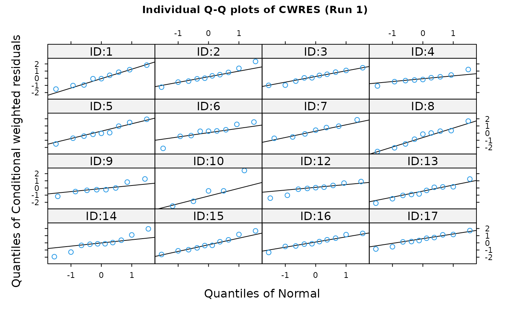

R/ind.plots.cwres.qq.R, R/ind.plots.wres.qq.R
ind.plots.wres.qq.RdThis is a compound plot consisting of QQ plots of the distribution of
weighted residuals (any weighted residual produced by NONMEM) for every
individual in the dataset. The function is a wrapper encapsulating
arguments to the xpose.plot.qq function.
ind.plots.cwres.qq(object, wres = "cwres", ...)
ind.plots.wres.qq(
object,
main = "Default",
wres = "wres",
layout = c(4, 4),
inclZeroWRES = FALSE,
subset = xsubset(object),
scales = list(cex = 0.7, tck = 0.5),
aspect = "fill",
force.by.factor = TRUE,
ids = F,
as.table = TRUE,
type = "o",
pch = object@Prefs@Graph.prefs$pch,
col = object@Prefs@Graph.prefs$col,
cex = object@Prefs@Graph.prefs$cex,
abllty = object@Prefs@Graph.prefs$abllty,
abllwd = object@Prefs@Graph.prefs$abllwd,
ablcol = object@Prefs@Graph.prefs$ablcol,
prompt = FALSE,
main.cex = 0.9,
mirror = NULL,
max.plots.per.page = 1,
...
)An xpose.data object.
Which weighted residual should we plot? Defaults to the WRES.
Other arguments passed to link{xpose.plot.qq}.
The title of the plot. If "Default" then a default title
is plotted. Otherwise the value should be a string like "my title" or
NULL for no plot title.
A list giving the layout of the graphs on the plot, in columns and rows. The default is 4x4.
Logical value indicating whether rows with WRES=0 is included in the plot. The default is FALSE.
A string giving the subset expression to be applied to the
data before plotting. See xsubset.
See xpose.plot.qq.
See xpose.plot.qq.
See xpose.plot.qq.
See xpose.plot.qq.
See xpose.plot.qq.
1-character string giving the type of plot desired. The following values are possible, for details, see 'plot': '"p"' for points, '"l"' for lines, '"o"' for over-plotted points and lines, '"b"', '"c"') for (empty if '"c"') points joined by lines, '"s"' and '"S"' for stair steps and '"h"' for histogram-like vertical lines. Finally, '"n"' does not produce any points or lines.
The plotting character, or symbol, to use. Specified as an
integer. See R help on points. The default is an open circle.
The color for lines and points. Specified as an integer or a text
string. A full list is obtained by the R command colours(). The
default is blue (col=4).
The amount by which plotting text and symbols should be scaled relative to the default. 'NULL' and 'NA' are equivalent to '1.0'.
Line type of the line of identity.
Line width of the line of identity.
Line colour of the line of identity.
Specifies whether or not the user should be prompted to press RETURN between plot pages. Default is FALSE.
The size of the title.
Mirror plots are not yet implemented in this function and this
argument must contain a value of NULL
Maximum number of plots per page
Returns a compound plot comprising QQ plots of weighted residuals conditioned on individual.
Matrices of Q-Q plots of weighted residuals in each included individual are displayed.
A wide array of extra options controlling Q-Q plots are available. See
xpose.plot.qq for details.
ind.plots.cwres.qq: Q-Q plots of conditional
weighted residuals for each individual
xpose.plot.qq, xpose.panel.qq,
qqplot, qqmath,
xpose.prefs-class, xpose.data-class
Other specific functions:
absval.cwres.vs.cov.bw(),
absval.cwres.vs.pred.by.cov(),
absval.cwres.vs.pred(),
absval.iwres.cwres.vs.ipred.pred(),
absval.iwres.vs.cov.bw(),
absval.iwres.vs.idv(),
absval.iwres.vs.ipred.by.cov(),
absval.iwres.vs.ipred(),
absval.iwres.vs.pred(),
absval.wres.vs.cov.bw(),
absval.wres.vs.idv(),
absval.wres.vs.pred.by.cov(),
absval.wres.vs.pred(),
absval_delta_vs_cov_model_comp,
addit.gof(),
autocorr.cwres(),
autocorr.iwres(),
autocorr.wres(),
basic.gof(),
basic.model.comp(),
cat.dv.vs.idv.sb(),
cat.pc(),
cov.splom(),
cwres.dist.hist(),
cwres.dist.qq(),
cwres.vs.cov(),
cwres.vs.idv.bw(),
cwres.vs.idv(),
cwres.vs.pred.bw(),
cwres.vs.pred(),
cwres.wres.vs.idv(),
cwres.wres.vs.pred(),
dOFV.vs.cov(),
dOFV.vs.id(),
dOFV1.vs.dOFV2(),
data.checkout(),
dv.preds.vs.idv(),
dv.vs.idv(),
dv.vs.ipred.by.cov(),
dv.vs.ipred.by.idv(),
dv.vs.ipred(),
dv.vs.pred.by.cov(),
dv.vs.pred.by.idv(),
dv.vs.pred.ipred(),
dv.vs.pred(),
gof(),
ind.plots.cwres.hist(),
ind.plots(),
ipred.vs.idv(),
iwres.dist.hist(),
iwres.dist.qq(),
iwres.vs.idv(),
kaplan.plot(),
par_cov_hist,
par_cov_qq,
parm.vs.cov(),
parm.vs.parm(),
pred.vs.idv(),
ranpar.vs.cov(),
runsum(),
wres.dist.hist(),
wres.dist.qq(),
wres.vs.idv.bw(),
wres.vs.idv(),
wres.vs.pred.bw(),
wres.vs.pred(),
xpose.VPC.both(),
xpose.VPC.categorical(),
xpose.VPC(),
xpose4-package
ind.plots.cwres.qq(simpraz.xpdb,subset="ID<18")
